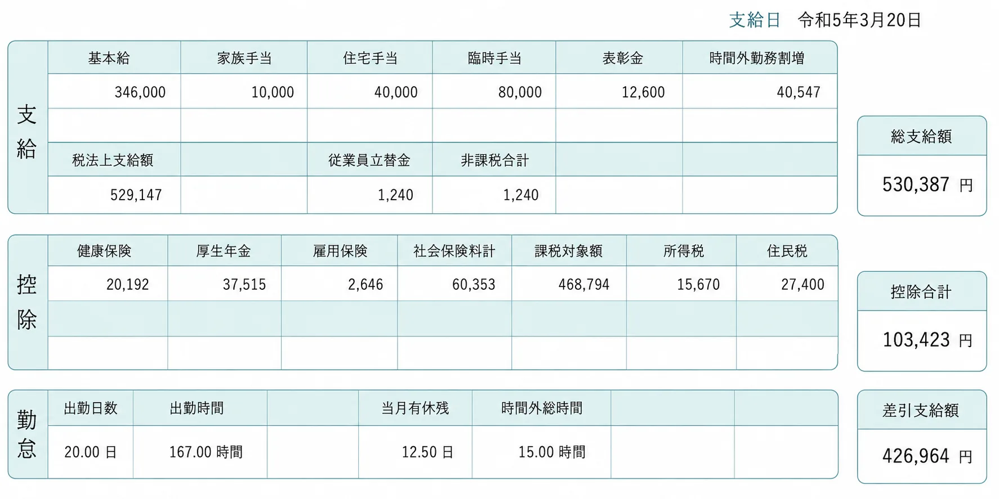
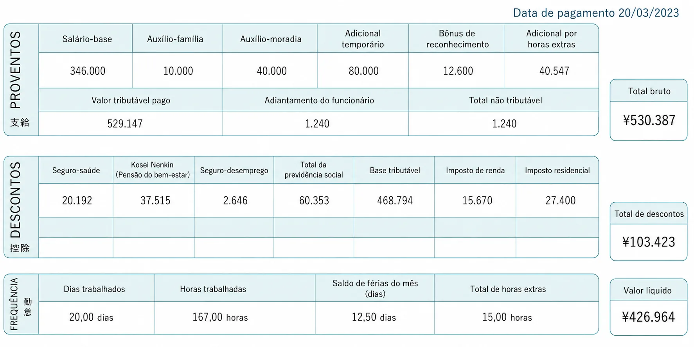

Salário e trabalho
Holerite no Japão: como ler seu contracheque (給与明細書)
O holerite japonês (給与明細書, kyūyo meisaisho) costuma ser organizado em três blocos principais: 勤怠 (frequência e horas trabalhadas), 支給 (valores pagos) e 控除 (descontos). Veja onde estão seu salário bruto, os descontos e o valor líquido — e entenda o que significa cada termo em japonês.
Como é um holerite de verdade
Este é um modelo real de holerite japonês (com valores fictícios), em japonês e com os termos traduzidos, pra você comparar com a versão interativa logo abaixo.

Modelo real, em japonês — como você vai ver o seu.

O mesmo modelo, com os termos traduzidos pra português.
Valores fictícios, só pra ilustrar o formato do documento.
Resposta rápida
Antes de entrar em cada detalhe, localize estes 4 pontos no seu holerite — eles dão o resumo geral do mês:
Exemplo fictício, com fins didáticos. Os campos e valores variam conforme empresa, salário, cidade e situação pessoal — este holerite não representa nenhum caso real.
O holerite fictício, campo por campo
Do bruto ao líquido
Todos os termos, em uma tabela
A mesma informação do widget acima, em formato de tabela — pra quem prefere ver tudo de uma vez ou pesquisar um termo específico.
| Termo japonês | Leitura | Em português | O que significa |
|---|---|---|---|
| 出勤日数 | shukkin nissū | Dias trabalhados | Dias que você efetivamente trabalhou no mês. |
| 有給日数 | yūkyū nissū | Férias remuneradas usadas | Dias de férias remuneradas tirados nesse mês. |
| 残業時間 | zangyō jikan | Horas extras | Horas trabalhadas além da jornada normal. |
| 深夜時間 | shinya jikan | Horas noturnas | Horas trabalhadas entre 22h e 5h. |
| 基本給 | kihonkyū | Salário-base | Valor fixo combinado em contrato. |
| 通勤手当 | tsūkin teate | Auxílio-transporte | Reembolso do custo de ida e volta ao trabalho. |
| 家族手当 | kazoku teate | Auxílio-família | Adicional pago por ter dependentes. |
| 残業手当 | zangyō teate | Adicional de horas extras | Pagamento pelas horas extras trabalhadas. |
| 総支給額 | sōshikyūgaku | Total bruto | Soma de tudo que a empresa paga, antes dos descontos. |
| 健康保険 | kenkō hoken | Seguro-saúde | Contribuição do seguro-saúde público. |
| 厚生年金 | kōsei nenkin | Previdência (Kōsei Nenkin) | Contribuição da aposentadoria pra quem trabalha registrado. |
| 雇用保険 | koyō hoken | Seguro-desemprego | Contribuição pequena que dá direito a auxílio em caso de demissão. |
| 介護保険 | kaigo hoken | Seguro de cuidados de longa duração | Contribuição obrigatória a partir dos 40 anos. |
| 所得税 | shotokuzei | Imposto de renda | Estimativa mensal do imposto, retida na fonte. |
| 住民税 | jūminzei | Imposto residencial | Imposto ao município, sobre a renda do ano anterior. Não é cobrado no primeiro ano. |
| 控除合計 | kōjo gōkei | Total de descontos | Soma de todos os descontos do mês. |
| 差引支給額 | sashihiki shikyūgaku | Valor líquido (手取り) | O que realmente cai na sua conta: bruto menos descontos. |
Por que esse valor mudou?
É normal o valor líquido variar de mês pra mês, mesmo com o mesmo salário-base. Os motivos mais comuns:
Isso é uma explicação geral, não um diagnóstico do seu caso — se algo parecer errado no seu holerite específico, o caminho mais seguro é perguntar direto pro RH da sua empresa.
Perguntas frequentes
O que é 健康保険 no holerite?
O que é 厚生年金?
O que significa 控除?
Qual é a diferença entre 総支給額 e 差引支給額?
Por que o 住民税 pode não aparecer no meu primeiro período no Japão?
O que é 介護保険?
Por que meu salário líquido mudou mesmo com o mesmo salário-base?
O que significa 手取り?
Fontes oficiais
- Japan Pension Service — 定時決定（算定基礎届）: revisão anual do 標準報酬月額.
- Agência Nacional de Impostos (NTA) — 源泉徴収のしかた: como funciona a retenção do imposto de renda na fonte.
- Kyōkai Kenpo — 介護保険料率について: seguro de cuidados de longa duração a partir dos 40 anos.
Os valores deste holerite são fictícios e só servem pra ilustrar o formato do documento. Cada empresa tem seus próprios adicionais e sua própria forma de organizar o holerite — o essencial (勤怠, 支給, 控除) costuma se repetir.
Quer entender melhor os descontos específicos? O imposto residencial (jūminzei) tem uma página própria explicando por que ele não pega no primeiro ano, e a página do nenkin mostra quanto desse desconto você pode recuperar ao voltar pro Brasil.